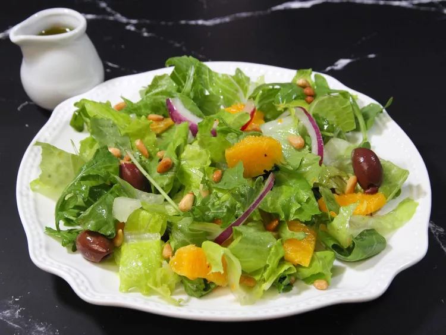

Salada Tropical

Esta é uma salada leve, refrescante e cítrica que vai despertar o seu paladar.
Já visualmente,dá vontade comer.
Ingredientes
Molho
- 1/3 xícara de azeite extra virgem
- 1/4 xícara de suco de laranja espremido na hora
- 1 colher de chá de vinagre de vinho branco.
- sal e pimenta-do-reino moída na hora a gosto
Salada
- 2 cabeças de alface romana, cortadas em pedaços pequenos
- 1 maço de rúcula
- 1 laranja, descascada e segmentada
- 1/2 xícara de azeitonas kalamata sem caroço
- 1/2 cebola roxa pequena , em fatias finas
- 2 colheres de sopa de pinhões torrados
Passos
- Faça o molho de carne.
- Cozinhe o macarrão.
- Faça a mistura de ricota.
- Faça camadas de lasanha de acordo com as instruções da receita.
- Cubra com papel alumínio e leve ao forno.
- Deixe a lasanha descansar antes de servir.